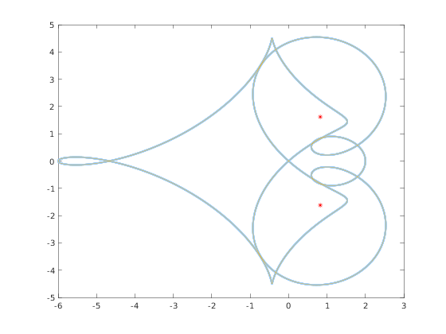

Approximating a single eigenvalue
The command eig_single can be used to approximate an isolated eigenvalue of a $\mathcal{QT}$ matrix $A$.
Contents
Syntax
x = eig_single(A, x0) approximates an eigenvalue of A close to x0.
Example
In this example we approximate two complex conjugate eigenalues of a real matrix $A$, and plot the boundary of the continuous spectrum using the range function.
E = [ zeros(3, 7) , diag([ 8, -8, 8 ]) ]; A = cqt([0 1 -2 1], [0 1 1 0 -1 0 0 1], E); x1 = eig_single(A, 1 + 1i); x2 = eig_single(A, 1 - 1i); plot([ x1, x2 ], 'r*'); hold on; plot(range(A));